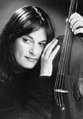

|  |
Violist Ann Roggen’s talents stem from a wide range of solo and chamber experience.
She has been awarded grants from Chamber Music America as well as the National Endowment for the Arts, and is a member of the Orchestra of St. Luke’s, which has recorded extensively for Telarc, Sony and Deutsche Gramaphone.
In recent seasons, she has been heard with the New York Philharmonic and the St Louis Symphony, and is currently on the faculty of Bennington College.
Ms. Roggen is an advocate of unique and unusual repertoire for the viola in combination with other instruments and voice. In conjunction with the New York Viola Society, she is committed to creating performance opportunities for music of this genre, both old and new. Her love of chamber music has taken her to the String Quartet Seminar at the Britten-Pears School in Aldeburgh, England, the Tokyo International Quartet School, as well as tours of South America and Greece.
Ms.Roggen received her musical training at the Peabody Institute of Johns Hopkins University and the Juilliard School. Her principal teachers have included Karen Tuttle, Lillian Fuchs, Joseph Fuchs and the Juilliard String Quartet.
|